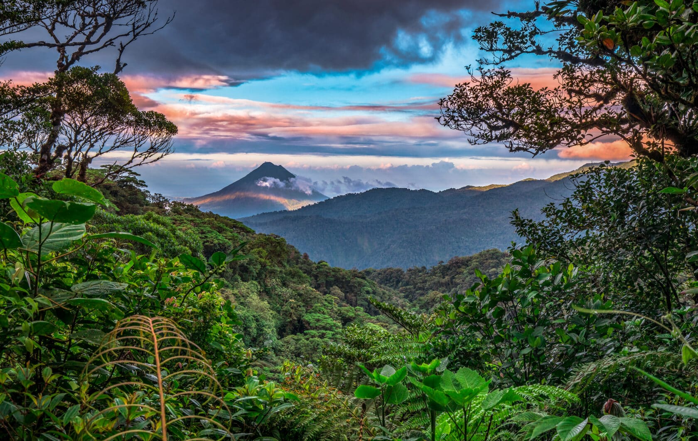

Tamarindo
Tamarindo is a prime spot for surfing and sportfishing, diving and sunning. Nesting leatherback turtles do their thing along the beaches from October to May and, for some nesting of your own, gorgeous beach houses, B&Bs and luxury hotels line the sunny sands. Shopping and dining options are superb and plentiful, perfect for sampling the true flavors of Costa Rica.
Package
Jaco
The tiny hamlet of Jaco is located in the Pacific Coast province of Puntarenas, Costa Rica. It’s the ultimate hideaway for sun seekers and active travelers, with cinnamon-hued volcanic-sand beaches, lush green rain forest and verdant mountains. Surfers flock here from around the world, but families, and honeymooners also find much to love, thanks to the multitude of beaches, outdoor activities, dining, shopping and nightlife.
Package
Santa Teresa
Far on the tip of Costa Rica’s Nicoya Peninsula, away from airports and city lights, is Santa Teresa. And while this jungle-backed beach town is remote, it is anything but dull. Hip restaurants, shared workspaces, beach parties, and a growing population of young expats make it feel like the next big trend. In this post, we’ll tell you why Santa Teresa has stolen so many hearts and help you plan a visit.
Package